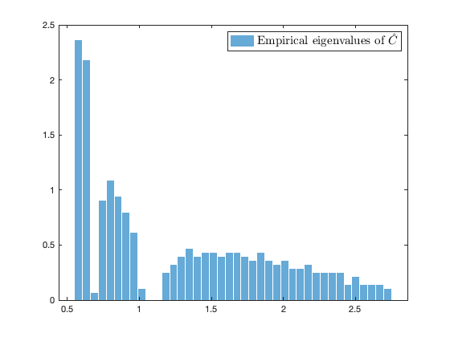
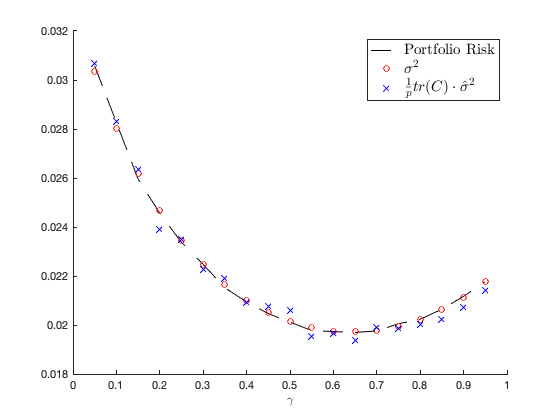

Section 3.5 Practical course material 2: Robust portfolio optimization via Tyler estimator
This page contains simulations of Practical course material 2 in Section 3.5.
Contents
Random equivalent asymptotics between and 
close all; clear; clc coeff = 5; p = 100*coeff; n = 500*coeff; c = p/n; eigs_C = [ones(p/4,1); 3*ones(p/4,1); 10*ones(p/2,1)]; C = diag(eigs_C); % population covariance tau = gamrnd(.5,2,n,1); Z = randn(p,n); inv_norm_Z = p./diag(Z'*Z); Z = Z*diag(sqrt(inv_norm_Z)); % uniformly distribution on the sphere X = sqrtm(C)*Z*diag(sqrt(tau)); gamma = 0.5; if or(gamma <= max(0,1-1/c), gamma >1) error('Error: wrong regularization gamma!') end hat_C_tmp = eye(p); hat_C = eye(p)/2; while norm(hat_C - hat_C_tmp)/norm(hat_C)>1e-3 hat_C_tmp = hat_C; inv_hat_C_X = hat_C\X; hat_C = (1-gamma)*X*diag(1./diag(X'*inv_hat_C_X/p))*(X')/n + gamma*eye(p); end eigs_hat_C = eig(hat_C); delta = 1; delta_tmp = 0; while abs(delta-delta_tmp)>1e-6 delta_tmp = delta; delta = mean( eigs_C./( (1-gamma)/delta*eigs_C + gamma ) ); end hat_S = (1-gamma)/( 1-(1-gamma)*c )/delta*sqrtm(C)*Z*(Z')*sqrtm(C)/n + gamma*eye(p); eigs_hat_S = eig(hat_S); figure histogram(eigs_hat_C, 40, 'Normalization', 'pdf', 'EdgeColor', 'white'); legend('Empirical eigenvalues of $\hat C$', 'FontSize', 15, 'Interpreter', 'latex') figure histogram(eigs_hat_S, 40, 'Normalization', 'pdf', 'EdgeColor', 'white'); legend('Empirical eigenvalues of $\hat S$', 'FontSize', 15, 'Interpreter', 'latex')
Portfolio risk, the asymptotic approximation , and the estimate for different 
close all; clear; clc coeff = 1; p = 256*coeff; n = 512*coeff; c = p/n; u = (0.5+ rand(p,1))/sqrt(p); C = 5*u*(u') + eye(p); eigs_C = eig(C); gamma_loop = 0.05:0.05:0.95; nb_average_loop = 50; store_output = zeros(length(gamma_loop),3); for gamma_index = 1:length(gamma_loop) gamma = gamma_loop(gamma_index); if or(gamma <= max(0,1-1/c), gamma >1) error('Error: wrong regularization gamma!') end tmp = zeros(1,3); for average_loop = 1:nb_average_loop %nu_student = 100; %%% degrees of freedom nu of Student's t distribution %Z = trnd(nu_student,p,n)/sqrt(nu_student/(nu_student-2)); Z = randn(p,n); inv_norm_Z = p./diag(Z'*Z); Z = Z*diag(sqrt(inv_norm_Z)); % uniformly distribution on the sphere d = 3; tau = chi2rnd(d,n,1)/d; X = sqrtm(C)*Z*diag(sqrt(tau)); hat_C_tmp = eye(p); hat_C = eye(p)/2; while norm(hat_C - hat_C_tmp)/norm(hat_C)>1e-4 hat_C_tmp = hat_C; inv_hat_C_X = hat_C\X; hat_C = (1-gamma)*X*diag(1./diag(X'*inv_hat_C_X/p))*(X')/n + gamma*eye(p); end eigs_hat_C = eig(hat_C); delta = 1; delta_tmp = 0; while abs(delta-delta_tmp)>1e-6 delta_tmp = delta; delta = mean( eigs_C./( (1-gamma)/delta*eigs_C + gamma ) ); end hat_S = (1-gamma)/( 1-(1-gamma)*c )/delta*sqrtm(C)*Z*(Z')*sqrtm(C)/n + gamma*eye(p); eigs_hat_S = eig(hat_S); inv_hat_C_1 = hat_C\ones(p,1); inv_hat_C_X = hat_C\X; risk = inv_hat_C_1'*C*inv_hat_C_1/(ones(1,p)*inv_hat_C_1)^2; beta = mean( eigs_C.^2./( (1-gamma)/delta*eigs_C + gamma ).^2 ); inv_eq_hat_C_1 = ((1-gamma)/delta*C + gamma*eye(p))\ones(p,1); sigma2 = delta^2/(delta^2-c*beta*(1-gamma)^2)*(inv_eq_hat_C_1'*C*inv_eq_hat_C_1)/(ones(1,p)*inv_eq_hat_C_1)^2; hat_delta = mean( diag(X'*inv_hat_C_X)./diag(X'*X) )/(1-(1-gamma)*c); hat_sigma2 = hat_delta/(1-gamma-(1-gamma)^2*c)*(inv_hat_C_1'*(hat_C - gamma*eye(p))*inv_hat_C_1)/(ones(1,p)*inv_hat_C_1)^2; tmp = tmp + [risk, sigma2, hat_sigma2*mean(eigs_C)]/nb_average_loop; end store_output(gamma_index,:) = tmp; end figure hold on plot(gamma_loop,store_output(:,1),'k--') plot(gamma_loop,store_output(:,2),'ro') plot(gamma_loop,store_output(:,3),'bx') legend('Portfolio Risk', '$\sigma^2$', '$\frac1p tr(C) \cdot \hat \sigma^2$', 'FontSize', 15, 'Interpreter', 'latex') xlabel('$\gamma$', 'Interpreter', 'latex')